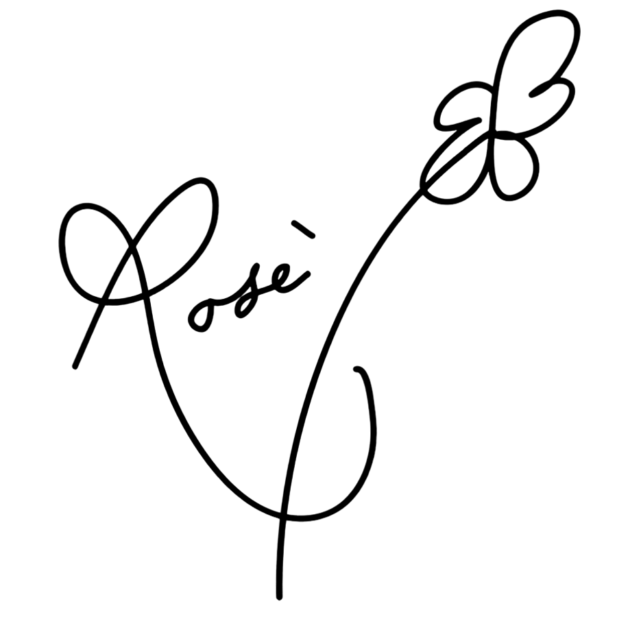
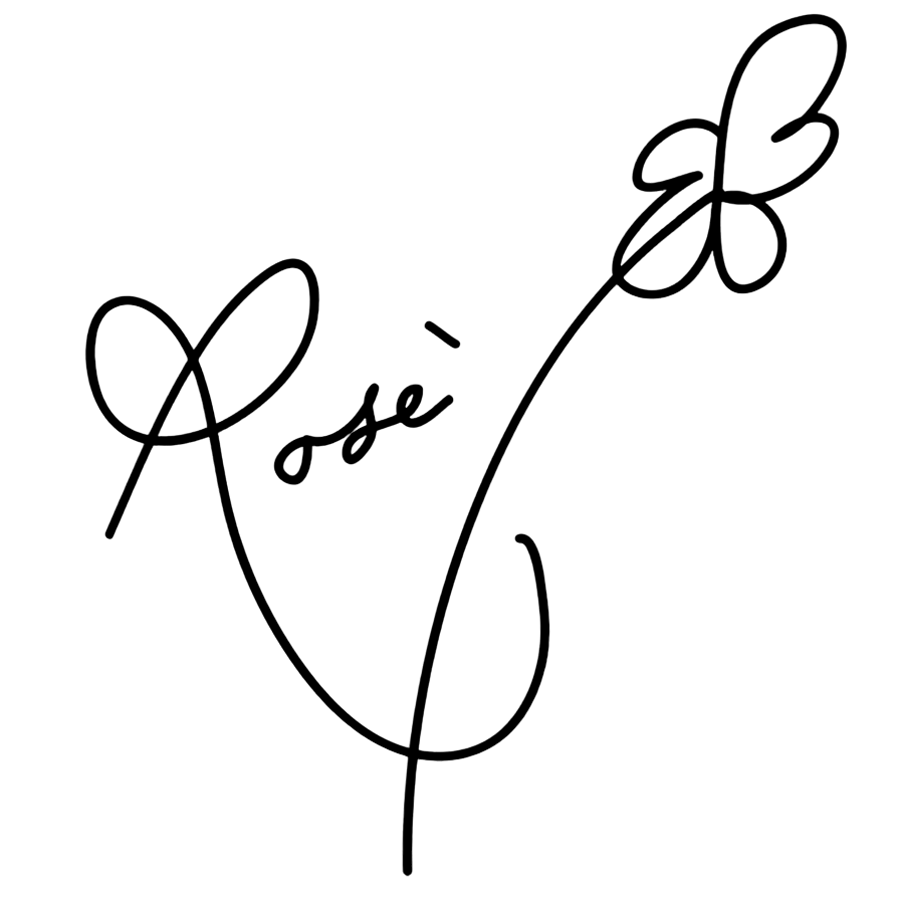

BLɅϽKPIИK
DEBUT BLΛƆKPIИK (블랙핑크 데뷔)
Группа дебютировала 8 августа 2016 под крылом лейбла YG Entertainment в составе 4 участниц: Джису / Jisoo, Дженни / Jennie, Розэ / Rosé и Лиса / Lisa. был выпущен дебютный сингловый альбом Square One[6]. Первый заглавный сингл «Whistle» был описан как «минимальный хип-хоп-трек»[7]; был спродюсирован Тедди Паком и Future Bounce, а текст написали Ребекка Джонсон, Тедди Пак и B.I из iKON[8]. Второй сингл «Boombayah» был спродюсирован Тедди и одним из авторов текста стала Ребекка[9]. Режиссёром видеоклипа был Со Хён Сын[10]. Обе песни оккупировали первые две строчки мирового песенного чарта Billboard; Black Pink стали первыми корейскими артистками, достигшими такого результата быстрее всех, и третьими корейскими артистками с таким показателем после PSY и Big Bang[11]. «Whistle» стал № 1 в цифровом, стриминговом, загрузочном и мобильном чартах по итогам августа. На крупнейшей китайской стриминговой платформе QQ Music группа также лидировала[12]. 14 августа состоялась трансляция дебютного выступления Blackpink на Inkigayo. Там они одержали первую победу, тем самым побив рекорд среди женских групп по самому короткому сроку выигрыша музыкального шоу с момента дебюта. Промоушен Square One официально завершился 11 сентября.


 
